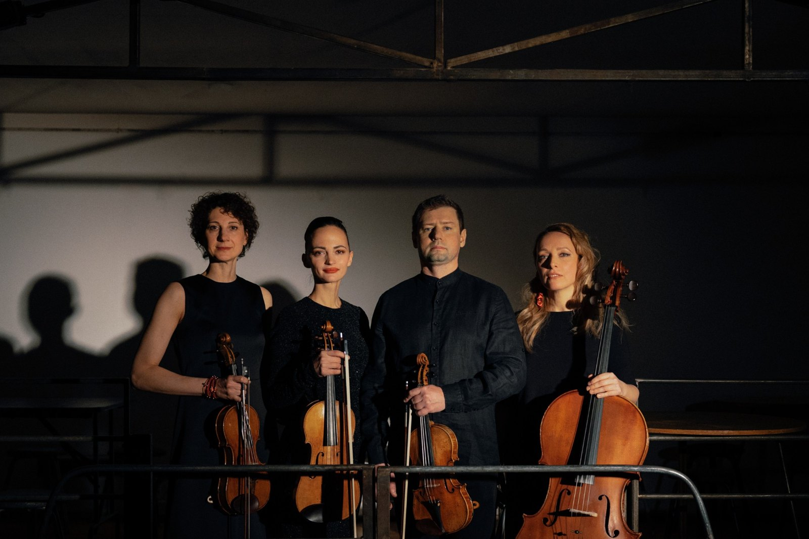

OpensoundOrchestra – String Quartets vol. 2
26 ноября в ДК «Рассвет» OpensoundOrchestra представит «String Quartets vol. 2» – второй альбом струнных квартетов на FANCYMUSIC. В нём шесть сочинений современных российских композиторов и шесть разных взглядов на жанр струнного квартета: от постминимализма Павла Карманова до мифов Южного Урала и акустических ландшафтов Сибири.
«String Quartets vol. 2» продолжает антологию современной российской музыки, которую коллектив начал первым альбомом в 2024 году. Программа сложилась в поездках музыкантов по стране – из знакомств и открытий.
В альбом вошли признанные сочинения – постминималистичный «String QuaREtet» Павла Карманова и неоклассика «Fall» Алексея Айги. Рядом с ними музыка, написанная по заказу коллектива: «Пурпурные облака» Юрия Каспарова и «Эхо пяти желаний» – погружение в буддийскую философию от молодого бурятского композитора Анастасии Дружининой, созданное в рамках программы «Ноты и квоты». Электронику для этой пьесы Дружинина сделала сама.
Диапазон альбома – от академического авангарда до архаики. Квартет № 3 «Страна городов» Сергея Зятькова из Сургута обращается к мифологии Южного Урала. «Васюганское болото» екатеринбуржца Дмитрия Мургина сделано на стыке с саунд-дизайном: струнные выстраивают акустический ландшафт Сибири и дыхание «лёгких планеты».
Альбом записан в Академии хорового искусства имени В. С. Попова. Запись, сведение и мастеринг – Михаил Спасский.


Презентация альбома
26 ноября 2026, четверг, 19:30
ДК «Рассвет» · Москва, Столярный пер., 3к15
Солисты OpensoundOrchestra впервые сыграют программу альбома целиком.
Программа
- Павел Карманов. String QuaREtet
- Алексей Айги. Fall
- Юрий Каспаров. Пурпурные облака
- Анастасия Дружинина. Эхо пяти желаний
- Сергей Зятьков. Страна городов
- Дмитрий Мургин. Васюганское болото
Исполнители
- Станислав Малышев, скрипка
- Инна Зильберман, скрипка
- Ксения Жулева, альт
- Ольга Калинова, виолончель
В программе вечера – музыкальный сюрприз, который музыканты держат в секрете и представят только тем, кто будет в зале.
Об артисте
«OpensoundQuartet» – квартет солистов OpensoundOrchestra, специальный проект оркестра, который с 2018 года развивается параллельно с ним. Коллектив основали скрипач и дирижёр Станислав Малышев и виолончелистка Ольга Калинова. Название Opensound – метафора разнообразия музыки, которую играет ансамбль.
В репертуаре квартета в основном музыка российских и зарубежных композиторов XX–XXI веков: сочинения, ставшие классикой современной академической музыки, звучат рядом с премьерами. Одно из главных направлений – музыка композиторов из разных регионов России, с вниманием к молодым авторам. Квартет регулярно заказывает новые сочинения и играет их по всей стране – в Санкт-Петербурге, Казани, Перми, Петрозаводске, Нижнем Новгороде, Воронеже, Туле, Тобольске, Сургуте, Хабаровске, Петропавловске-Камчатском и других городах.
Коллектив строит долгие концертные циклы-антологии. В сезоне 2023–2024 годов в ДК «Рассвет» квартет в семи концертах сыграл все 15 струнных квартетов Шостаковича рядом с музыкой его современников – Шебалина, Лигети, Пендерецкого, Шнитке, Лютославского, Головина и других. В сезоне 2024–2025 годов там же прозвучали все шесть квартетов Бартока, а рядом с ними – сочинения Бетховена и Брамса, Р. Штрауса и Дебюсси, Берга и Денисова.
«OpensoundQuartet» участвует в проектах «Броненосец „Потёмкин“» и «Ноты и квоты», в фестивалях «Картинки с выставки» (Нижний Новгород), «Дягилев P. S.» (Санкт-Петербург), Международном фестивале имени Фраучи (Москва), «Московская осень», «Музыка сибирских историй», Sound Up и других. Играл с А. Любимовым, Т. Гринденко, Д. Илларионовым, А. Коробейниковым.
Дебютный альбом квартета «String Quartets» вышел в 2024 году и получил премию «Чистый звук». В него вошли сочинения Н. Хрущёвой, Э. Низамова, В. Мартынова, А. Палаева, В. Кобекина и Zhokhowski.
Ссылки на страницы ансамбля
О лейбле
FANCYMUSIC – музыкальный рекорд-лейбл, направленный на издание новой актуальной русской музыки различных направлений. Это свободная платформа для широкого спектра современных российских композиторов и музыкантов, а также основа для появления новых имён.
Ссылки на страницы лейбла
Контакты для прессы
- Emailmail@fancymusic.ru
- Telegram@s_krasin
Пресс-релиз
FANCYMUSIC · Пресс-релиз · 6 ноября 2026